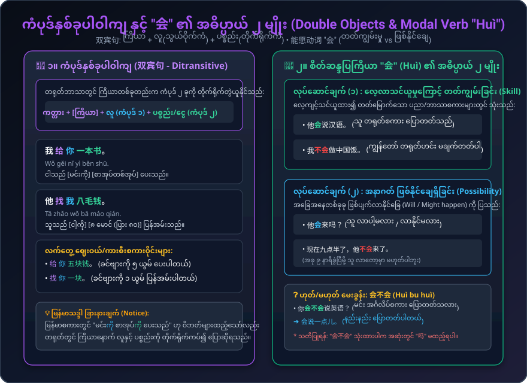

ဘတ်စ်ကားစီးခြင်းနှင့် လက်မှတ်ဝယ်ခြင်း၊ ကားပြောင်းစီးရန် လမ်းညွှန်တောင်းခံခြင်း၊ ကံပုဒ်နှစ်ခုပါဝါကျ (双宾句: 给/找)၊ စိတ်ဆန္ဒပြကြိယာ (能愿动词 "会") နှင့် ကားလိုင်းနံပါတ် "1" ကို "yāo" ဟု အသံထွက်ခြင်း စည်းမျဉ်းများ
ကားလိုင်းမေးမြန်းခြင်း၊ လက်မှတ်ဝယ်ခြင်း၊ ငွေရှင်းခြင်း၊ မှတ်တိုင်မေးခြင်း နှင့် ကားပြောင်းစီးခြင်း စကားစုများ
ဘတ်စ်ကားပေါ်တွင် စကားပြောဆိုခြင်းနှင့် ဘာသာစကားတက္ကသိုလ်သို့ ကားပြောင်းစီးရန် မေးမြန်းခြင်း
ဘတ်စ်ကားစီးနင်းမှု စကားအသုံးအနှုန်းများ နှင့် ကံပုဒ်နှစ်ခုတွဲ ဝါကျဖွဲ့စည်းပုံ သရုပ်ပြပုံများ
ဘတ်စ်ကားစီးနင်းရာတွင် အသုံးပြုသော 上车 (တက်)၊ 下车 (ဆင်း)၊ 换车 (ပြောင်းစီး)၊ လက်မှတ်ဝယ်ယူမှု (买票) နှင့် ကားလိုင်းနံပါတ် "1" ကို "yāo" ဟု ဖတ်ပုံ အဆင့်ဆင့် လမ်းညွှန်ပြသချက်။

ကြိယာ [给 / 找] နောက်တွင် သွယ်ဝိုက်ကံ (လူ) နှင့် တိုက်ရိုက်ကံ (ပစ္စည်း/ငွေ) လာပုံ၊ နှင့် "会" ၏ စွမ်းရည် (Mastered Skill) vs ဖြစ်နိုင်ချေ (Possibility) ကွာခြားချက် ရှင်းလင်းချက်။
အသုံးများသော သဒ္ဒါစည်းမျဉ်း (၄) ရပ်ကို ဥပမာများနှင့်တကွ လေ့လာခြင်း
ကြိယာနောက်တွင် ကံပုဒ်နှစ်ခု တွဲယူသည်။ ပထမကံပုဒ်သည် "လူ" (Indirect Object) ဖြစ်ပြီး ဒုတိယကံပုဒ်သည် "ပစ္စည်း/ငွေ" (Direct Object) ဖြစ်သည်။ အသုံးများသော ကြိယာများမှာ 给 (ပေးသည်) နှင့် 找 (ပြန်အမ်းသည်) ဖြစ်သည်။
"会" တွင် အဓိက အသုံးပြုပုံ (၂) မျိုးရှိသည်: (၁) သင်ယူတတ်ကျွမ်းသော စွမ်းရည် (Skill)၊ (၂) ဖြစ်နိုင်ချေရှိခြင်း သို့မဟုတ် ခန့်မှန်းချက် (Possibility)။
ကားလိုင်းနံပါတ်၊ ဖုန်းနံပါတ်၊ အခန်းနံပါတ် စသည်တို့ကို ပြောဆိုရာတွင် "1" (yī) ကို "7" (qī) နှင့် အသံမမှားစေရန် "yāo" ဟု အသံထွက်သည်။
ကိန်းဂဏန်း + ရေတွက်ပြပုဒ် (量词) + နာမ် ပုံစံဖြင့် တွဲသုံးရသည်။
အမျိုးအစားအလိုက် စစ်ထုတ်ခြင်း၊ ရှာဖွေခြင်းနှင့် အသံထွက် နားထောင်ခြင်း
ဘာသာစကားတတ်ကျွမ်းမှု မေးမြန်းခြင်းနှင့် လက်တွေ့အသုံးချ လေ့ကျင့်ခန်းများ
ဒုတိယအသံ + ပေါ့သံတွဲများ၊ သံပြိုင်စကားလုံးများ နှင့် ပေကျင်းတက္ကသိုလ်သို့ သွားလည်ခြင်း ပုံပြင်
သင်ခန်းစာ (၁၃) ၏ အဓိက သဒ္ဒါနှင့် စကားပြောများကို စစ်ဆေးပါ (မှန်ကန်သော အဖြေကို နှိပ်ပါ)